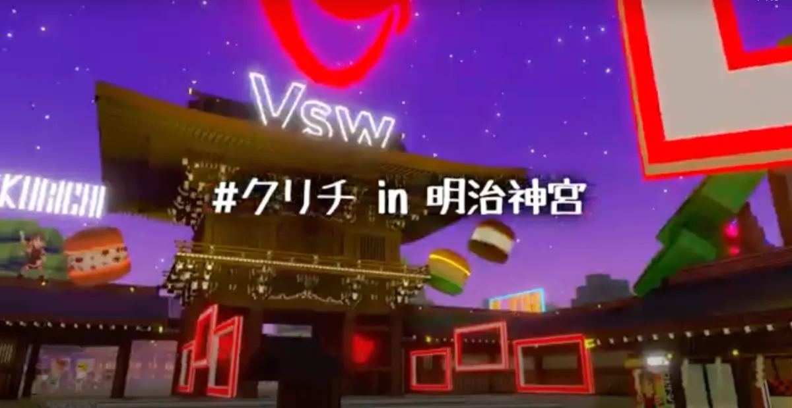
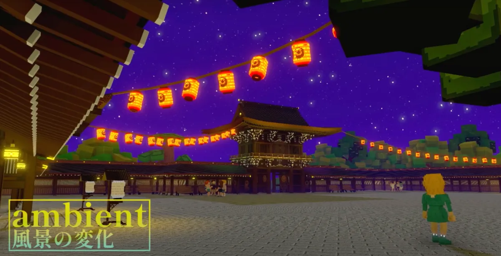

GAME JAM 参戦🎮 明治神宮のメタバース再現に込めた情熱🔥

こんにちは！Vsw株式会社のマーケティング担当TOMです！今回は、私たちが参加した「The Sandbox City Builder: Tokyo」ゲームジャムの結果報告を兼ねて、Vsw社のメタバース担当の如月工房さんとクリエーターチームPowPadsLabにインタビューを行いました。
情熱とこだわりが詰まったこのプロジェクトが見事に入賞したことを、皆さんにお伝えできることを非常に嬉しく思っています！🎉
📖 この記事はこんな人におすすめ！
- 東京の文化や象徴的な場所が好きな人🏙️
- メタバースに興味がある人🌐
- クリチが好きな人🍒🧀
- ゲームジャムや新しい挑戦にワクワクする人🎮
- 可愛いキャラクターやアセットを楽しみたい人💖
- 明治神宮を訪れたことがある人⛩️
🏆「The Sandbox City Builder: Tokyo」ゲームジャムで見事入賞！
12月に開催された「The Sandbox City Builder: Tokyo」ゲームジャムにおいて、Vsw株式会社のメタバース担当である如月さん（如月工房）とPowPadsLabのクリエーターチームが見事に入賞しました！🎉
このコンテストは、東京の象徴的な場所や文化を再現するメタバース体験を作成するもので、如月チームは「明治神宮」をテーマにした体験を制作。入賞により、作り上げた体験がサンドボックスのメタバースに設置され、さらにサンドボックス本社のマーケティングチームのサポートも受けられることになりました！✨
プロジェクトに取り組んだきっかけとこだわり

TOM： まずは、プロジェクトに取り組んだきっかけから教えてください！どうして明治神宮を選んだんですか？⛩️
如月さん（如月工房）： 明治神宮は東京の象徴的な場所であり、文化的にも非常に重要なスポットです。東京の魅力をメタバースで再現したいという思いから選びました。特に、明治神宮の壮大な建築と自然環境を、メタバースの中でどれだけ忠実に再現できるかに挑戦したかったんです！🔨
PowPadsLab： 明治神宮のスケール感や、実際の場所での経験がどれほど印象的だったかを、メタバースで表現することにすごくワクワクしました！東京の文化を世界中の人々に届けるという意味でも、大きな意味があると感じましたね。🌍
TOM： 明治神宮を再現する上で、特にこだわったポイントはありますか？💡
如月さん： 一番のこだわりは、建物のサイズや配置を実際のスケールに合わせることでした！サイズ感を正確に再現し、明治神宮の空気感をそのまま伝えたかったんです。voxel artでの表現に限界がある中で、できるだけリアルに見えるように工夫しました。💻✨
PowPadsLab： 建物の立体感や細部のディテールにもかなりこだわりました。時間帯ごとに変わる音楽やアセットの変化も大きな特徴です。黄昏時の幻想的で神聖な空気から、クリチが登場するとガラッと雰囲気が変わる設計にしています。🌅🌙

TOM： ゲーム内に登場するキャラクターについても気になります。特に、セバスチャンが明治神宮にお参りをするシーンが話題ですが…👀
如月さん： セバスチャンが明治神宮にお参りに来るシーンを作りたかったんです。彼が訪れることで、プレイヤーがよりリアルに感じられる体験になるかなと思いました。参拝シーンは、プレイヤーにとって一つの思い出になるはずです！🙏
PowPadsLab： セバスチャンの登場は、驚きと楽しさを提供できると思います。神聖な場所でお参りをすることで、ゲームの世界がより豊かに感じられるんですよね。時間帯によってセバスチャンも踊り出すので、お見逃しなく🕺
TOM： そしてもちろん、クリチちゃんの登場も外せませんね！📸✨
如月さん： クリチちゃんはVsw社の象徴ですから、ゲーム内に登場させることで、プレイヤーに親しみやすさと楽しさを感じてもらいたかったんです。💖
PowPadsLab： クリチちゃんはゲームの中でもアクセントになるキャラクターです！一緒に写真を撮れるスポットを作って、思い出を残せるようにしました。時間によってクリチちゃんが登場し、ダンスを始めます。📷
🌟 今後の展望：NYのクリチ体験とメタバースの進化
TOM： 最後に、今後の展望について教えてください！NYのクリチ体験も進行中とのことですが、どんな新しい体験が生まれる予定ですか？
如月さん： NYのクリチ体験も新しいチャレンジです！メタバースで世界中をつなげる新しい試みを進めています。これからさらに多くの地域にクリチの体験を広げて、Vsw社のブランドをグローバルに展開していきたいと思っています。🌍🚀
PowPadsLab： メタバースでの体験は無限の可能性が広がっています。次のプロジェクトでは、さらにインタラクティブで楽しい体験を提供できるよう、技術を駆使して進化させていきます。🌟
TOM： 本日はお忙しい中、貴重なお話をありがとうございました！📣✨
🍔 PowPadsLabの皆さん、実際の#クリチを食べながら制作！
実は、PowPadsLabの皆さんはゲーム制作中に、#クリチ（クリームチーズバーガー）を食べながらアイデアを出し合っていたんです！その結果、クリチのように美味しい体験が生まれました😄
如月工房さんは、VSW社のメタバース担当として「クリチランド」の制作を手がけています。The SandboxのCOOセバスチャン氏と加藤代表が描く「Web3×メタバース」のビジョンを具現化し、未来を創り出すプロジェクトを進行中です。
PowPadsLabは、V-RANGERS PTE. LTD.に所属するクリエイティブチームで、The Sandboxでのコンテスト受賞回数が多数。クライアント案件も手がける実力派チームで、メタバース領域の豊富な経験を活かし、革新的なコンテンツ制作を行っています。
執筆：Vsw株式会社 マーケティング担当 TOM 🍔🐾